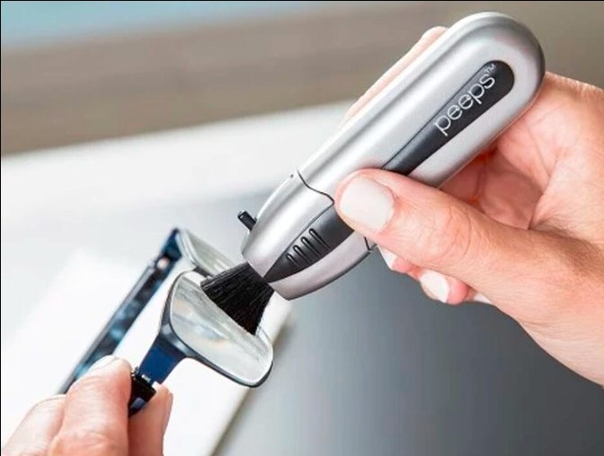

Warum Optiker Brillentücher, Reinigungstücher und Sprays gegen DAS HIER eintauschen
Dienstag, 8. Januar, 2019 | Advertorial für Peeps

„12.500 amerikanische Optiker empfehlen den Einsatz einer neuen, auf Karbon basierenden Technologie zur Brillenglasreinigung“
Optikerin Dr. Hunt erklärt, wie diese neue Reinigungstechnologie es verhindert, die Sehkraft weiter zu verschlechtern, indem sie die Brillengläser extrem sauber hält.
F: Kommen wir doch gleich zur Sache. Erzählen Sie uns ein wenig von diesem NEUEN, einzigartigen Produkt, das so viele Optiker mittlerweile verwenden?
A: Vor kurzem bin ich auf einige Forschungsarbeiten über ein Produkt namens ‚Peeps‘ gestoßen. Dabei handelt es sich um eine neuartige, auf Karbon basierende Reinigungslösung, die Brillengläser absolut fleckenlos hinterlässt.
F: In Ordnung, aber warum brauchen wir einen neuen Brillenglasreiniger überhaupt? Was spricht gegen ganz normale Tücher und Lappen, die sonst verwendet werden?
A: Die meisten Leute wissen nicht, dass Mikrofasertücher Materialien enthalten, die das Brillenglas beschädigen könnten. Diese Mikrokratzer können sich schließlich häufen und das Glas milchig aussehen lassen, was für die Sehkraft schädlich ist. Ebenfalls wird diskutiert, ob auf Alkohol basierende Tücher Brillengläser mit bestimmten Beschichtungen potenziell beschädigen können.
F: Und bei Peeps ist das nicht der Fall?
A: Nein. Was Peeps von Carbon Clean so einzigartig macht ist, dass es sich hier um das einzige Produkt seiner Art handelt, das auf revolutionäre Karbon-Molekulartechnologie zurückgreift.
Die fortschrittlichen Pads reinigen die gesamte Oberfläche der Brillengläser gründlich und entfernen störenden Schmutz und Staub auf mikroskopischer Ebene.
Dadurch werden die Brillengläser unglaublich sauber. Diese Technologie weist sogar unerwünschte Stoffe ab und schützt damit das Glas - außerdem ist sie für alle Brillenglastypen geeignet.

F: Wow! Und wer hat sich das einfallen lassen?
A: Das ist das Interessanteste an der Sache. Es handelt sich hier um dieselbe Technologie, die die NASA auf der ISS und das US-Militär anwenden, um ihre Bildschirme zu reinigen.
„1Brillentücher, Reinigungstücher und Sprays könnten Mikrokratzer verursachen und Brillengläser damit milchig und undurchsichtig machen. Nicht nur sehen Sie dadurch weniger klar, auch könnten Sie Ihre allgemeine Sehkraft weiter verschlechtern.“
F: Ist die Verwendung kompliziert?
A: Nein, es könnte fast nicht einfacher sein. Es sind nur 2 Schritte erforderlich:

Schritt 1: Entfernen Sie allen Staub, Schmutz und raue Partikel mit der kratzresistenten ausfahrbaren Bürste

F: Das ist ja unglaublich! A: Stimmt, aber Peeps ist nicht nur deshalb wahrlich einzigartig. Auch alles andere an diesem Produkt ist beeindruckend…
- der Lüfter hat drei Geschwindigkeiten
- es ist leicht zu betreiben: Energie über USB
- der Wassertank reicht bis zu acht Stunden
- sieben Stimmungslicht-Farbvarianten
- es ist kompakt – passt in verschiedene Bereiche
- es ist tragbar – kann auf Reisen mitgenommen werden
F: Die kosten doch bestimmt um die 40 bis 50 Euro, wenn nicht sogar noch mehr, oder? A: Man könnte meinen, dass neuartige Technologie wie diese hier wirklich so viel kosten müsste, doch tatsächlich sind Peeps wirklich preiswert - sie kosten nur 9,99€!
Sorgen Sie jetzt für kristalklare Gläser!